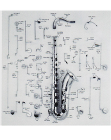
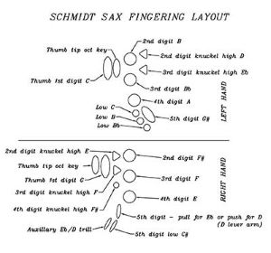

The saxophone is based heavily off of the clarinet, and the similarities can be seen when looking at a Bb Clarinet and a Soprano Saxophone.
However, while the clarinet is cylindrical, the saxophone is conical bored. Meaning the diameter of the inside of a clarinet is mostly the same at the top and bottom, a saxophone gradually gets larger as you move down the instrument.
This makes it sound a lot closer to the human voice, and gives it a wider range of expression. Sound is produced in a saxophone by the mouthpiece and reed, a thin piece of wood attatched to the mouthpiece. When air is blown between the mouthpiece and reed, the reed vibrates, making sound.
As the sound travels through the body of the instrument, it deepens. Holes in the body release the sound, and these holes can be plugged by the keys to make the sound deeper. When all keys are pressed, all holes but the bell are plugged and the sound is the lowest possible.
Saxophones are usually made with a copper-zinc form of brass. The mouthpiece, usually made from plastic or ebony, is the most important part of the instrument for discerning tone, as it is where the sound is made.
The lay of a mouthpiece is the distance between the tip of the mouthpiece and the reed, and it determines the tone of the instrument along with the mouthpiece chamber size.
The crook is what connects the mouthpiece to the rest of the body, and has cork on one end to hold the mouthpiece on. The mouthpiece can be slid up and down the crook to tune the instrument.
When it comes to keys, there are two types: closed and open standing. Closed standing keys are held closed by springs and only open when the key is pressed. Open standing keys are held open by springs and close when the key is pressed. All keys have pads usually made of felt or leather to provide an airtight seal.
Lots of keys are displaced from where you actually rest your fingers, so there are posts along the body of the instrument to carry the movement from your fingers to the keys.

